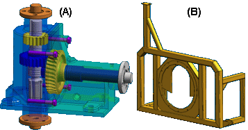

Simplified assemblies best practices
When considering whether to simplify an assembly, there are several factors that can determine whether you receive the maximum benefit from assembly simplification. This Help topic discusses these factors.
Simplify both parts and assemblies
Using simplified parts in conjunction with a simplified assembly improves simplified assembly performance in the following ways:
-
Faster creation of the simplified assembly representation because there are fewer total surfaces to evaluate.
-
Reduced assembly document size, which reduces memory demand.
When you simplify parts before simplifying the assembly, you are reducing the total number of surfaces which must be evaluated during assembly simplification. This allows the assembly simplification process to complete faster.
The wide range of commands available for part simplification also allow you better control over which part surfaces are removed before assembly simplification. For example, there may be holes and cutouts on an exterior part that are not necessary in the simplified assembly. If these holes and cutouts expose interior faces, the interior faces will be included in the simplified assembly.
By simplifying the exterior part to remove the holes and cutouts, the simplified assembly representation will contain fewer surfaces, which reduces file size and memory demands.
Simplify assemblies that contain interior components
Some assemblies are better suited to assembly simplification than others. In general, assemblies that have many interior components are better candidates for assembly simplification. This is because assembly simplification processes the assembly to show only the exterior envelope of faces and by excluding small parts.
For example, assembly (A) is an ideal candidate for assembly simplification because there are many complex components enclosed by the exterior housing. The exterior housing itself also contains many interior surfaces that would be excluded by assembly simplification.
Assembly (B) is a poor candidate for assembly simplification because there are few interior surfaces and no interior components to exclude. If assembly (B) is also used in a higher level assembly, where assembly (B) is enclosed, that higher level assembly may be a better candidate for simplification.

Open assemblies with simplified subassemblies
When you open an assembly that contains simplified subassemblies, you can specify whether the assembly is opened with the subassemblies simplified or as designed. When you open an assembly with the subassemblies simplified, file open times are improved.
Simplify deeply nested assemblies
The more subassemblies and parts an assembly has, the more likely the assembly is a good candidate for simplification. When you open a large assembly with many subassemblies that have been simplified, file open performance is improved.
Inactivate simplified subassemblies
When working with large, nested assemblies that contain simplified subassemblies, you should work with the simplified subassemblies inactive whenever possible. This can significantly reduce memory requirements.
Avoid simplifying top-level assemblies
The simplified assembly representation is stored in the assembly document in which it was created, which increases the file size. An assembly that has been simplified will open slower than an identical assembly which has not been simplified.
This means that the top-level assembly itself does not benefit from assembly simplification.
Although performance is improved when creating drawing views of a top-level assembly that has been simplified, in most cases this performance improvement does not offset the performance impact when opening the top-level assembly.
Configure Teamcenter structure expansion
In the Teamcenter-managed environment, the Teamcenter preference SEEC_ExpandStructure determines how product structures are expanded. When you use simplified subassemblies, set the preference value to 1 to expand product structures level-by-level. The simplified subassembly acts as a firewall and structure expansion stops at a subassembly that is simplified.
How do I
Edit an Auto-Simplify definitionCreate a single body using Auto-Simplify
Use the simplified version of a part in an assembly
Use the designed version of a part in an assembly
Create a simplified version of an assembly
Save a simplified assembly as a part
Controlling simplified assemblies
Learn more
Simplifying partsSimplifying assemblies
Look up more details
Auto-Simplify commandAuto-Simplify command bar
Create Simplified Assembly using the Visible Faces command
Create Simplified Assembly using the Model command
Enclosure command
Duplicate Body command
Simplify Assembly command
Save Simplified As command
Use Simplified Parts command
Use Simplified Assemblies command
Simplify Model command
Update Simplified Assembly command
Save Simplified Assembly As dialog box
Simplified Assembly Visible Faces Options dialog box
Design Assembly command
Use Designed Assembly command
Use Designed Part command
Design Model command
Create Simplified Assembly Visible Faces command bar
Create Simplified Assembly Model command bar